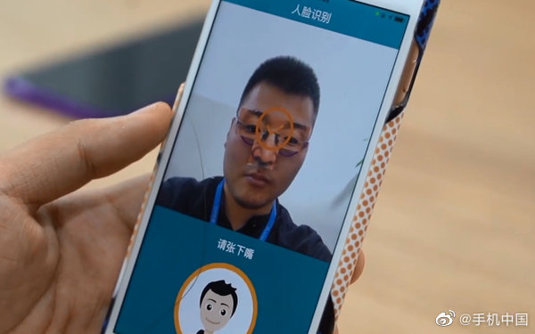
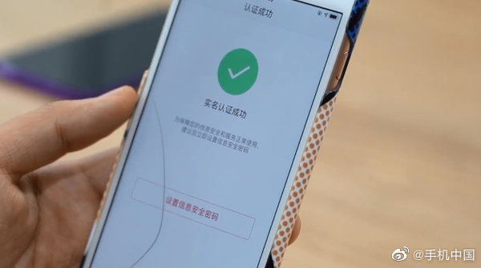

这是不是广告？
@手机中国:
【清华团队破解19款安卓机人脸识别 iPhone 11稳如泰山】近日，依托清华大学人工智能研究院成立的团队瑞莱智慧RealAI披露了新的研究成果：研究人员通过对抗样本攻击，破解了19款安卓手机的人脸识别解锁系统。同样被破解的，还包括十余款金融和政务服务类App。研究人员介绍称，在拿到被攻击者的照片后，首先需要通过算法生成眼部区域的干扰图案，随后，将图案打印、裁剪出来贴到镜框上，测试人员戴上眼镜面对手机就能完成破解。研究团队一共选取了20款手机，除了一台iPhone 11外，其它安卓手机均在15分钟内被破解。据悉，这19款手机覆盖排名前五的国产手机品牌的低端机到旗舰机型，其中还有一款是去年12月份最新发布的旗舰机。
- 
- 